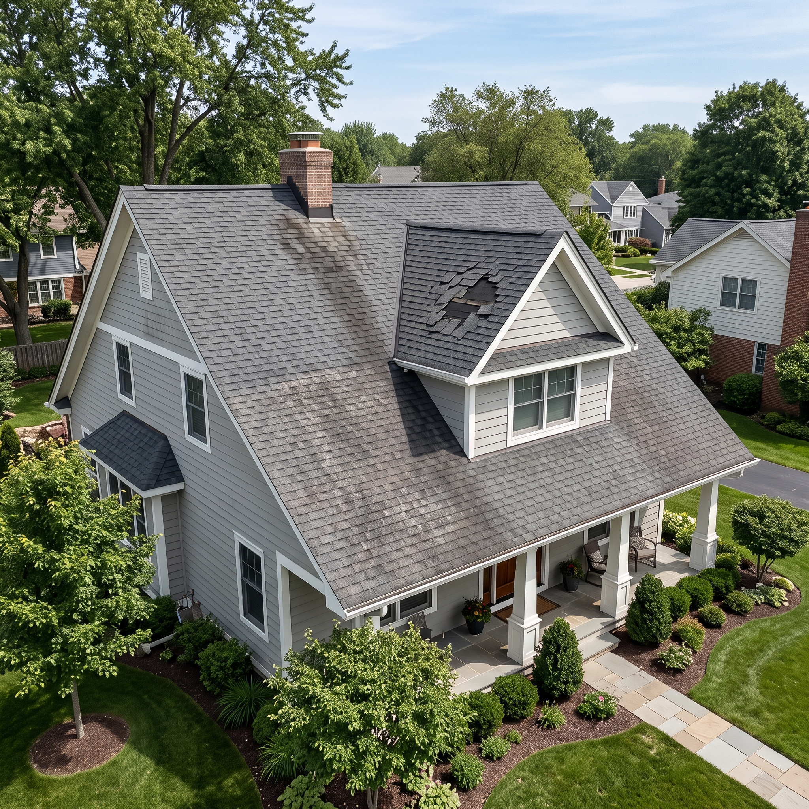

Water marks or damp areas
Ceiling stains or moisture in an attic can indicate a leak and are usually assessed by a licensed professional.
Read about common roofing materials and typical signs of roof wear, then continue to an independent website for roofing cost information.
This opens roofingcosts.org, a separate website we do not own. The ZIP code you enter is passed to that site. We may earn a commission on referrals. See disclosure
Roofs differ by material, climate and maintenance. This page offers general background so the common terms and options are easier to follow.

Roof condition can depend on age, materials, weather exposure and maintenance. The items below are commonly checked during a professional inspection.
Ceiling stains or moisture in an attic can indicate a leak and are usually assessed by a licensed professional.
Cracked, loose, curled or missing pieces can reduce how well a roof sheds water.
Each roofing material has a typical service life and its own maintenance needs.
Materials differ in appearance, weight, maintenance and lifespan. Which one is suitable depends on the building, the local climate and local rules.
One of the most widely installed residential roofing types, sold in many colors and styles.
COMMON RESIDENTIAL OPTIONAvailable as panels or shingle-style pieces in a range of finishes, and typically priced higher than shingles.
PANEL OR SHINGLE STYLEA heavy, long-lasting material that requires a structure able to carry its weight.
CLAY AND CONCRETESome background reading can make conversations with contractors more productive. These steps are suggestions only.
Installation records or permit history can show how old a roof is, and a visual check can reveal visible damage.
Understanding the general differences helps when reading written estimates.
Ask for written estimates from licensed, insured contractors and verify credentials independently.
RoofWise does not provide quotes or perform roofing work. The form below opens roofingcosts.org, an independent website with its own terms and privacy policy.